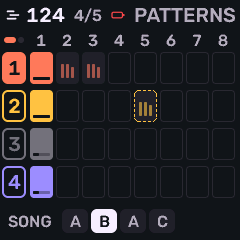
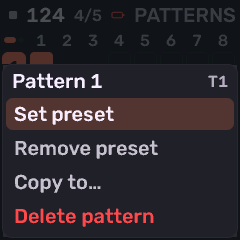
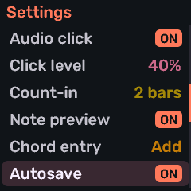

About
Melodee is multi-engine synthesizer and sequencer firmware for the M-VAVE FM-1. After you install it, the unit runs Melodee instead of the official firmware: one to four tracks, each with one instrument, a 64-step sequencer with patterns and songs, effects, and USB MIDI and audio.
The selectable engines are Prophet, FM6, CZ-1, SID and Drum. Melodee is based on Felucca; it is not affiliated with or endorsed by M-VAVE or Hügelton Instruments. Report Melodee problems on the Melodee GitHub, not to Felucca.
Before you install
You need Chrome or Edge, a data USB cable plugged straight into the computer (not a charge-only cable or hub if you can avoid it), and the FM-1 powered and connected.
- Switching to another custom firmware? Choose Back up and install TransitFM1 in the installer first. Once the FM-1 shows TRANSIT, use the next firmware’s own installer. Use TransitFM1 0.1.3; 0.1 has startup and MIDI stalls, and 0.1.2 was withdrawn. For Baud Girl, install official V15 first, then use Baud Girl’s installer: its image can exceed TransitFM1’s write range.
- Before installing or downgrading, export anything you care about: projects and user sounds. This version keeps every engine in one shared bank of 384 slots (U001–U384). The first start after an update from an older bank may show MIGRATING PRESETS; leave the power connected until it finishes. Older firmware cannot read the new bank, so keep a backup made before that update if you may want to go back. A downgrade or skipped backup can lose Melodee music, sounds and settings.
- Projects, templates and presets from Melodee 1.0 or later load. Anything saved before 1.0 shows OLD FORMAT and stays untouched until you choose to replace it. If you still have those, open and save them with 1.1.0 before updating. A backup the device cannot read is refused before anything is written.
- Melodee is a field-testing release with no warranty. Use at your own risk.
Installing
Open the web installer in Chrome or Edge, connect the FM-1, and press Install. Leave the cable connected until writing finishes. When it succeeds, the FM-1 reports Melodee’s product identity (for example FM-1_9xxxx).
Current builds use both cores; Prophet can play up to eight voices per track. Single-core builds have been retired. If an update leaves the unit in the loader, install a working package again using the recovery steps below.
From a terminal you can also run tools/fm1_install.py (see the project README).
The panel
| Control | Job |
|---|---|
| Piano Keys | Play notes on the selected track. In layers and grids they also select patterns, effects, roots and drum lanes. |
| KNOB 1–4 | Edit the four controls on the open page, or Stage’s four sound knobs. |
| MASTER KNOB | Overall output volume. |
| ALGORITHM KNOB | Change the selected track, from 1 up to the last one in use, on every page; the screen takes that track’s color. |
| PRESETS KNOB | Browse sounds; on engine EDIT pages, jump between sections (or pick the operator / line); on NOTES, zoom. |
| SELECT KNOB | Turn the pages within the open section, both ways. On Stage, turn the HOME SELECT control instead. |
| FX SCL ENV LFO EDIT GLO ARP SEQ | Open that family’s pages; press again for the next page. |
| HOME | Return to Stage. On Stage, tap again for the chord view. Hold for the menu. |
| SAVE | Tap for PRESETS / USER / PROJECT. Hold to write the project back to its slot. Playing stops first. |
| PLAY/STOP | Start and stop the tracks in use. |
| REC | Arm or disarm the selected track. While playing, recording starts at the next pattern start and continues across loops until you disarm or stop. Hold to capture (or take a jam on SONG). |
| OCT− OCT+ | On Stage: shift octave (both together reset). In menus and everywhere else: go back / enter or confirm. |
Key and button lights share one grammar: dark nothing there, dim something there, bright happening now, slow pulse waiting (for example REC armed but stopped, or a pattern queued for the loop end). The menu’s LIGHTS sets how bright idle indicators are.
Stage
HOME is Stage: the live performance screen. Each track in use has a lane with its sound name, pattern (and the next one while it waits for the bar), every step of that pattern as dots. A hit is the track’s color, a tie is dimmer, a rest is faint, and the step playing now is bright. The dots are as large as the row allows, grouped by bar. With one track, that sound is drawn large across the screen, with its pattern and the bar. The header shows tempo, a REC mark, and an octave badge such as +2 or −1. On Stage, SELECT turns the value chosen in HOME SELECT, and the header shows it.


The selected track’s four sound knobs stay in the bottom strip. Turning a knob updates its value there; the Stage display remains visible. What they do depends on the engine:
| Engine | KNOB 1 | KNOB 2 | KNOB 3 | KNOB 4 |
|---|---|---|---|---|
| Prophet | CUTOFF | RES | filter env amount | amp release |
| FM6 | MLVL | MRAT | MEG | DTUN |
| CZ-1 | WAVE | DCW | DETUNE | VIBRATO |
| SID | WAVE | PW | CUT | RES |
| Drum | TUNE | TONE | DECY | SNAP |
On a Drum track, lanes light as they hit. Hold OCT+ for the Stage sheet: Init sound, Save as user…, Favourite, Undo last load, Sound designer, Add track and Remove track.
Tap HOME again for the chord view: the twelve notes in a circle of fifths, the song’s key marked, sounding notes lit in their track’s color and joined into the chord, each track’s level pulsing in a corner, the output waveform, and four octaves of keys. A Drum track pulses with its level and does not add pitches to the wheel. Let go and the last chord stays, faded. Lifting notes one at a time keeps that whole chord until the last note is up; playing a new note starts a new chord. The knobs and octave buttons work as they do on Stage. Tap HOME again to return.
HOME SELECT (hold HOME) chooses what SELECT turns on both Stage pages: BPM (default), MOD WHEEL (the selected track’s, also sent as MIDI CC1), LEVEL, SWING, TRANSPOSE, CHORD (OFF, DIA3, DIA7, MAJ, MIN, DOM7, MAJ7, MIN7, SUS4, POW), ARP RATE, PATTERN (that track’s next pattern), or OFF. The choice is remembered. GLO SELECT offers the same choices for GLO+SELECT on any page, also defaulting to BPM.
Tracks
One to four tracks, one instrument and sound each. A new song starts with one. ALGORITHM selects among the tracks in use; the screen and its knobs take that track’s color. In NIGHT the four tracks are coral, amber, mint and lilac. Other themes use their own four. Knob 1 is the track color; the other three knobs are shades of it.
- On Stage, hold OCT+ and choose Add track. The next track (up to four) starts with its own power-on sound and empty patterns, becomes selected, and opens the sound browser. OCT− keeps that starting sound. TRACKS FULL means four are already in use.
- Remove track removes the selected track after a question, and only while stopped (STOP FIRST otherwise). The tracks after it move down, taking their sounds, patterns, song sections, motion and recordings with them. The last remaining track cannot be removed.
- Stage, the mixer, PATTERNS, SONG and GLO show the tracks in use. Projects and the template keep their own track count. A project saved before this version keeps all four.
- Each track carries its own engine, sound, patterns, transpose, effect sends, modulation and voice settings. ROOT, SCL, QNT and MPC degree are shared by the project.
- Mixing and solo live under GLO — see Global for MIXER, GLOBAL and SYSTEM.
- Sounding voices share one BUDGET (GLO → GLOBAL, KNOB 2): 8–32 points, default 18, remembered with the device. An idle track reserves nothing. FM6 uses 1 point per voice (up to 16). Prophet uses 2 per voice (up to eight voices a track). Other engines use 2. Melodee runs at the boot loader’s 360 MHz and does not change the clock. A unit updated while it was still at 320 MHz keeps that clock until the next power-off, and the allowance is smaller until then.
Sounds
Turn PRESETS (or open SAVE → PRESETS) to browse. KNOB 1 chooses the list and KNOB 2 (or keep turning PRESETS) chooses a sound. Each engine’s factory presets come first, then the shared user slots that use that engine.


| Control | What it does |
|---|---|
| KNOB 1 LIST | Choose the list — categories (BASS, LEAD, PAD, …), FAV, or RECENT. |
| KNOB 2 / PRESETS | Scroll sounds. While the list moves fast, the sound loads when the knob rests. |
| KNOB 3 FAV | Mark or unmark the current sound as a favourite (device favourites survive power-off). |
| KNOB 4 ENGINE | Change the engine and start from its init sound (dry, nothing changed): INIT PROPHET, FM6 INIT VOICE, INIT TONE, INIT SID, or the 808 kit. |
| OCT+ / OCT− | Keep the browsed sound / revert to the one you had. |
- Knobs accelerate on a spin; MENU → KNOB ACCEL OFF keeps every detent one step.
- Hold EDIT to return to the sound you had before browsing. Loading a sound never changes your patterns.
- Hold OCT+ on a sound page for the sheet: Init sound, Save as user…, Favourite, Undo last load, Sound designer. On Stage that sheet also has Add track and Remove track.
Saving sounds


Stop, tap SAVE, choose USER, pick a slot with KNOB 1/KNOB 2, press OCT+ for the sheet (Load, Save here, Rename, Erase), choose Save here, then OCT+ again. Name it on the NAME screen.
- Every engine shares one bank, U001–U384. A slot can hold a Prophet program, an FM6 voice, a CZ-1 tone, a SID sound, a drum kit, or any mix of those. SAVE → USER, FM6 → STORE and P5 STORE are that same bank. PRESETS lists a user sound under its own engine’s factory tones.
- Saving keeps the native voice and the sound’s envelopes, modulation, voice controls and spread. Loading leaves the track’s mix, effects, scale, arpeggiator and notes alone.
- Import here: a DX7, CZ-1, Prophet or Melodee preset sent over USB opens the USER list. Pick the destination with KNOB 1, press OCT+ and choose Import here. A DX7 cartridge needs 32 consecutive slots from there. Occupied slots ask before they are replaced. Cancel import leaves the slots unchanged. Playback must be stopped. An import does not load a track.
- Bulk presets: hold OCT+ and turn SELECT, KNOB 1 or KNOB 2 to select a range of USER or STORE slots. Release, then tap OCT+ for Send selected (USB SysEx), Erase selected (one confirmation) or Clear selection. Empty slots are skipped. A single USER slot can also Send.
NAME screen
| Control | What it does |
|---|---|
| White keys | Type letters, multi-tap like a phone keypad (press again within the window to step A → B → C). |
| Black keys | Switch mode: ← , SPACE , → , DEL (and 123 for numbers). |
| KNOB 1 | Move the cursor. |
| KNOB 2 | Change the character under the cursor. |
| OCT+ / OCT− | Save the name / cancel. Name length depends on the engine: Prophet 20 characters, FM6 10, CZ-1 16, others 12. |
Projects
Four project slots A–D, plus a template and a new-song wizard. Open SAVE → PROJECT. A project holds the tracks in use, their pattern banks (eight each, up to 32), timing, arrangement, automation and settings (FBKG format).


| Control | What it does |
|---|---|
| KNOB 1 SLOT | A, B, C, D, TMPL (template), or NEW past the template. |
| KNOB 2 BOOT | OFF or A–D — which project loads at power-on. BOOT OFF with a saved template uses the template. |
| KNOB 3 LOAD | GO to load the chosen slot. |
| KNOB 4 SAVE | GO to save into the chosen slot. |
| OCT+ | The slot’s sheet: Load, Save here, Rename, Boot, Erase (Erase asks first). |
- NEW opens the wizard, stopped only. Set key, scale and tempo (KNOB 1 ROOT, KNOB 2 SCALE, KNOB 3 TEMPO), then a role on each of the four knobs: -- (no track), KEEP, DRUMS, BASS, CHORDS, LEAD or PAD. The song keeps the places that have a role, in order, with empty patterns. With no template, track 1 starts as KEEP and the rest as --, so the song has one track. A saved template starts KEEP on as many tracks as the template has. A role’s first factory sound is used when the template’s sound does not already fit that role.
- TMPL: save your current sounds, settings and number of tracks as the template for new projects (empty patterns). With BOOT off and no template, power-on is one track and the power-on sound.
- Holding SAVE, or SAVE+REC, writes the project back to its slot (
SAVED B, and so on). If it is playing, the screen says STOPPING TO SAVE and the transport stops first. A project with no slot yet opens PROJECT on a free slot (NEW PROJECT: PICK SLOT). - Autosave: stopped and untouched for five seconds (no key, button, knob or MIDI), a project that already has a slot saves itself when it changed. Hold HOME and set AUTOSAVE to OFF to save only by hand. It defaults ON, and the choice survives power-off. Manual SAVE stays available either way.
Engines
Selectable instruments: PROPHET, FM6, CZ-1, SID, DRUM. Press EDIT for that engine’s pages; press again or use SELECT to move through them. On engines with several sections, PRESETS jumps between sections (and on FM6 / CZ-1 picks the operator / line). On an EDIT page, tap EDIT again for the section map. In that map, KNOB 2 moves by category, and KNOB 1 or SELECT picks a page within it, one step per detent. Each category remembers its page. OCT+ opens the page; OCT− or EDIT closes the map. Hold EDIT to undo.
Track 1 powers on with PROPHET FUNK BASS II. Retired engines (ANALOG, DIGITAL, PHASE, VOICE, NOISE, TRIO, WHEEL, PHYS, and others) stay silent if an old project still names them; their saved values remain. Choose another sound to play again. Ranges below are the device’s own; the same values appear in the web editor.
Prophet
Melodee’s own Prophet-5–style engine. Factory programs from Sequential’s Prophet-5/10 SysEx.
Sequential Prophet-5 Rev 4–style programs: two oscillators (saw, pulse; B also triangle), hard sync, mixer, SSI or Curtis four-pole filter, separate filter and amp envelopes, Poly-Mod, LFO, wheel, unison, glide and Vintage. PRESETS browses INIT, Sequential’s 200 factory programs, then the shared user slots that hold Prophet programs (U001–U384). Navigate between sections/pages with PRESETS knob, Navigate between individual settings per page (e.g. OSC A vs OSC B), with SELECT knob. In the SECTION map, use KNOB 2 for the category, KNOB 1 or SELECT for its page, and OCT+ to open it.


Oscillators
| Page | Controls |
|---|---|
| OSC A | FREQ A (pitch, semitones), SAW A (on/off), PULSE A (on/off), WIDTH A (pulse width). |
| OSC B | FREQ B (semitones), FINE B (fine detune), WIDTH B, KEY B (B tracks the keyboard on/off). |
| B WAVES | SAW B, TRI B, PULSE B (on/off), LOW B (B becomes an LFO: low frequency oscillator). |
Mixer and filter
| Page | Controls |
|---|---|
| MIXER | OSC A level, OSC B level, NOISE level, SYNC (hard-sync B to A). |
| FILTER | CUTOFF, RES (resonance), KEY (keyboard tracking OFF / HALF / FULL), MODEL (SSI or CURTIS four-pole). |
Envelopes
| Page | Controls |
|---|---|
| FLT ENV | ATK (attack), DEC (decay), SUS (sustain), REL (release) for the filter envelope. |
| AMP ENV | ATK, DEC, SUS, REL for the amplifier. |
| ENV MOD | ENV AMT (the amount to open the filter, following the envelope's shape), VEL FLT (velocity → filter), VEL AMP (velocity → level), RELEASE (release stage of both amplifier and filter envelopes toggle on/off). |
Poly-Mod, LFO and wheel
Two separate modulation paths. Poly-Mod takes the filter envelope and/or Oscillator B as sources and routes them into Osc A’s pitch, pulse width, and the filter. Osc B can do this even when its mixer level is zero, so it works as a pure modulator (audio-rate or low-rate with LOW B). The LFO / wheel path is independent: the LFO (and optional noise) is the source; its depth is INITIAL plus the MIDI mod wheel (CC 1), then you choose destinations on the WHEEL pages.
| Page | Controls |
|---|---|
| POLYMOD | Sources (amounts): ENV AMT (filter envelope), OSC B. Destinations (on/off): FREQ A (Osc A pitch), PW A (Osc A pulse width). |
| MOD FLT | FILTER (Poly-Mod destination: filter cutoff, on/off). Also VINTAGE (component drift), AT FLT (aftertouch → filter), AT LFO (aftertouch → LFO depth). |
| LFO | Shapes the wheel-path source: RATE, and waveform SAW / TRI / SQUARE (on/off). |
| WHEEL | Depth: INITIAL (always-on amount; mod wheel CC 1 adds on top), N MIX (blend noise into the LFO). Destinations (on/off): FREQ A, FREQ B (→ oscillator pitch). |
| WHEEL 2 | More destinations (on/off): PW A, PW B (→ pulse width), FILTER (→ cutoff). GLIDE is portamento time (not a modulation destination). |
Voice and store
The Voice section has Prophet’s own UNISON and BEND pages, plus Melodee’s shared VOICE list for the track (poly/mono, glide, priority, pan, mute). UNISON is not the VOICE page — VOICE is the list of global engine voice settings. Loading or editing UNISON copies into Melodee’s VCE / PRIO / DTUNE / ALLOC; you can override those afterwards on VOICE. Program glide stays on WHEEL 2; VOICE’s GLD is Melodee’s track portamento.
| Page | Controls |
|---|---|
| UNISON | UNISON (on/off), VOICES (1–5), DETUNE (0–7), note PRIORITY (LOW / LOW RET (retrigger) / LAST / LAST RET). |
| VOICE | List (KNOB 2 row, KNOB 1 value): VCE (POLY / MONO / LEG / UNI), GLD (glide time), GLMOD (RATE / TIME), PRIO (LAST / LOW / HIGH), ALLOC (ROT / REUSE), DTUNE, PAN (−100…+100%), MUTE, SPRD (stereo spread). Same shared page as other engines — see Voice. |
| BEND | BEND (pitch-bend range, 1–12 semitones). |
| STORE | SLOT (U001–U384, the shared bank), STORE, SEND, INIT. Controls whose required waveform or switch is off are drawn dim; they stay editable. |
FM6
Uses msfa from Dexed (Google Inc., Pascal Gauthier).
Six-operator FM (Dexed / DX7–compatible): 32 algorithms with an on-screen chart, per-operator frequency, levels, envelopes and scaling, pitch envelope, LFO, and controller / portamento settings. On operator pages, PRESETS picks the operator. FM6 voices live in the shared slots U001–U384. DX7 librarians can send a 32-voice bank over USB into any 32 consecutive slots.


Voice
| Page | Controls |
|---|---|
| ALGO | ALG (algorithm 1–32), FB (feedback 0–7), SYNC (oscillator key sync), TRNS (transpose, ±24 semitones). |
| PITCH EG | R1–R4: pitch envelope rates. |
| PITCH LV | L1–L4: pitch envelope levels. |
| FM LFO | WAVE (TRI / SAWDN / SAWUP / SQR / SIN / S&H), SPEED, DELAY, KSYNC (key sync). |
| FM LFO 2 | PMD (pitch mod depth), AMD (how much the LFO wobbles amplitude — global amp-mod depth), PMS (pitch mod sensitivity 0–7). |
Per operator
| Page | Controls |
|---|---|
| FREQ | CRS (coarse ratio, or Hz in FIXED), FINE, DTN (detune ±7), MODE (RATIO / FIXED). |
| OUT | OUT (output level 0–99), VEL (velocity sensitivity 0–7), AMS (how much this operator follows amp mod, 0–3; see below), ON (operator on/off). |
| EG RATE | R1–R4: envelope rates (0–99). |
| EG LVL | L1–L4: envelope levels (0–99). |
| SCALE | Keyboard level and rate scaling. BRK (break point — at this note, level is unchanged), LDEP / RDEP (how strongly level changes left / right of BRK, 0–99; 0 = off), RSCL (rate scaling 0–7: higher keys run the envelope faster). |
| CURVE | LCRV / RCRV: shape and direction of level scaling on each side of BRK (−LIN / −EXP lower the operator’s level as you move away; +EXP / +LIN raise it). Depth (LDEP / RDEP) sets how much; the curve’s sign sets which way. |
AMS is not the operator envelope (that’s EG RATE / EG LVL). It’s DX7-style amplitude modulation sensitivity: how strongly this operator’s level follows amp mod from the LFO’s AMD, or from controllers routed to amplitude (wheel / breath / aftertouch with destination A). AMD sets how much amp wobble exists; AMS (0 = ignore, 3 = strongest) sets whether this operator hears it. Use it for tremolo on a carrier, or put AMS on a modulator so the LFO breathes the brightness instead of the overall volume.
SCALE and CURVE are DX7-style keyboard level scaling: they raise or lower that operator’s output as you play above or below BRK. Classic use: −LIN or −EXP on the right so high notes get quieter, or so a modulator thins out and the sound gets less bright up the keyboard.
Controllers (per track, saved with the project)
| Page | Controls |
|---|---|
| FM BEND | BEND+ / BEND− (bend range up / down, 0–12 st), STEP (bend step), DXVEL (DX velocity curve on/off). |
| FM PORTA | PORTA (PEDAL / ON), TIME, GLISS (glissando on/off), ENGINE (MODERN / MARK I / OPL — algorithms 4 and 6 use longer feedback loops in MARK I). |
| FM WH/FT | WHEEL range, W.DST (wheel destination: P / A / E combinations), FOOT range, F.DST. |
| FM BR/AT | BRTH (breath) range and B.DST, AFTER (aftertouch) range and A.DST. |
| STORE | SLOT (U001–U384, the same bank as SAVE → USER), STORE, SEND, INIT. |
CZ-1
Phase-distortion core after MAME’s uPD933 model by Devin Acker. Factory tones from Casio.
Native Casio CZ-1 tones: two lines with waveforms and windows, ring and noise, detune, vibrato, and six eight-step envelopes (pitch, wave, amp × two lines). Factory: Casio’s 64 presets (A-1 BRASS 1 … H-8 TYPHOON SOUND). User tones use the shared slots U001–U384, the same bank as the other engines; a fresh device starts with them empty. Values that do nothing on the current tone are drawn dim but stay editable.


Common
Every tone is built from one or two lines. A line is a DCO → DCW → DCA chain: pitch, then phase-distortion (timbre), then amplitude — each with its own eight-step envelope. Common pages set how the lines combine, plus shared detune, vibrato and windows. PRESETS picks which line’s pages you are editing when you are in the per-line section.
| Page | Controls |
|---|---|
| CZ TOOLS | NAME (16-character tone name; OCT+ to edit), 1 > 2 / 2 > 1 (copy one line’s wave, window, key follow, level, velocity and all three envelopes onto the other — MOD stays with line 1 and is not overwritten), COMP (swap the edited tone with the snapshot taken before your first edit on this track; “NO EDITS” if you have not changed anything yet). |
| CZ LINE | LINE chooses how many oscillators sound: LINE1 or LINE2 alone (the unused line’s params are drawn dim), 1+2 (both lines with their own settings), or 1+1 (two voices that both use line 1’s params — line 2’s own wave/envelopes are unused, but detune and MOD can still affect the second oscillator). MOD mixes the two lines when more than one is active: OFF (sum), RING (multiply line 1 × line 2), or NOISE (randomly stretch line 2’s phase — a noise-modulated second line). OCT is a global pitch offset (0 = −1 octave, 1 = unison, 2 = +1 octave). |
| CZ DETUNE | Pitch offset for line 2 only: SIGN (±), OCT (0–3 octaves), NOTE (0–11 semitones), FINE (0–60). Inactive (dim) in LINE1 mode; SIGN only matters when some detune is set. Use with 1+2 or 1+1 for chorusing, intervals, or beating. |
| CZ VIBRATO | A pitch LFO shared by the tone: WAVE (TRI / SAW UP / SAW DN / SQR), RATE (speed), DEPTH (amount — set this above 0 or the vibrato is silent and WAVE / RATE / DELAY go dim), DELAY (wait after note-on before the vibrato fades in). |
| CZ WINDOW | A repeating amplitude mask inside every oscillator cycle, for as long as the note plays. WAVE picks the phase-distortion carrier shape; WINDOW then fades that carrier up/down within each period (like a tiny amp envelope that retriggers on every cycle). That changes the waveform’s silhouette and spectrum; OFF leaves the cycle flat (no extra shaping). SAW DN, TRIANGLE, TRAPEZ, HALF SAW, 2 SAW UP, 2 SAW 6 and 2 SAW 7 are different masks. LINE1 and LINE2 each have their own. This is separate from the WAV envelope (which moves DCW / timbre over the note) and the AMP envelope (overall loudness over the note). |
Per line (LINE 1, LINE 2)
Each line has a waveform page, a touch (level / velocity) page, and three envelopes: PIT (pitch / DCO), WAV (wave depth / DCW — the phase-distortion amount that brightens or darkens the tone), and AMP (loudness / DCA). These are Casio-style rate/level multi-stage envelopes, not ADSR.
| Page | Controls |
|---|---|
| WAVE | WAVE is the primary carrier (SAW, SQUARE, PULSE, NULL = silent, DBL SINE, SAW-PULS, MULTISIN for a resonance-like spectrum, PULSE2). WAVE2 is an optional second carrier (same set, plus OFF): when on, the line alternates WAVE ↔ WAVE2 each phase wrap. W.KEY (0–9) is DCW key follow — higher notes get less wave/timbre depth (bright → darker up the keyboard). A.KEY (0–9) is DCA key follow — higher notes run the amp envelope faster (shorter notes up the keyboard). |
| TOUCH | LEVEL (1–15) is the line’s output level. V.PIT / V.WAV / V.AMP (0–15) set how much MIDI velocity scales pitch, wave depth and amp — soft notes pull those paths down. (The FM-1’s own keys send fixed velocity; velocity matters over MIDI or from the sequencer.) |
| PITCH / WAVE / AMP envelopes | The envelope shape of the CZ-1 is controlled by eight rates R1–R8 (how fast the envelope moves toward each step’s level — higher = faster) and eight levels L1–L8 (0–99 targets). END (1–8) is the last active step: the envelope only runs through END, and the END step always targets 0 (release to silence; its level value is ignored). SUS selects which level is the sustain step while the key is held; on release the envelope jumps past SUS and finishes through END → 0. SUS must sit before END (otherwise it shows “−” = no sustain). With no SUS, the whole path keeps playing after note-off — useful for long rings. Rates after END and levels at/after END are inactive (dim). Each line has its own Pitch, Wave and Amp envelopes (six envelopes total). |
SID
Uses reSID by Dag Lem, including measured combined-waveform tables from a real 6581 and 8580.
Probably the simplest synth engine (in terms of numbers of parameters to program) on the device; use this if you're looking to dial in a quick sound. It models a Commodore MOS 6581 / 8580 chip per note: waveforms, pulse width, ring, sync, combined waves, the chip’s ADSR, filter and drive. Thirty-two factory presets. Stage knobs: WAVE, PW, CUT, RES. With a C64 MODEL, MONO / LEG plays one note at a time; POLY turns a held chord into a fast chip arpeggio, one note per PAL frame, with one gate and envelope for the whole chord. This is separate from the ARP pages. New notes hard-restart the chip envelope.
| Page | Control | What it means |
|---|---|---|
| CHIP | MODEL | 6581 or 8580 (one chip per note), or C64 6581 / C64 8580 (one voice for the track, registers updated once per PAL frame at 50 Hz). |
| WAVE | TRI, SAW, PULSE, NOISE, or a combined wave (TRI+SAW, TRI+PLS, SAW+PLS, T+S+P). | |
| STACK | Second-oscillator stacking: ONE, DETUNE, OCT, FIFTH, MAJOR, SYNC, RING, SUB. | |
| PW | Pulse width. | |
| FILTER | CUT | Filter cutoff. |
| RES | Resonance (0–15). | |
| MODE | LP, BP, HP, NOTCH, LP+BP, BP+HP, ALL, or OFF. | |
| DRIVE | Input drive into the filter. |
Drum
808 kit: Hügelton’s TR-808 circuit models. 909 kit: the schwung module 9W9 by AThousandDetails (after ER-99), ported via Charles Vestal’s x0x.
Synthesized TR-808, TR-909 and SID kits on the General MIDI key map. SID KIT uses a single 6581 chip whose three voices share the hits; SID DIGI also plays its synthesized kick and snare through the chip’s four-bit volume register. In SID mode, DIGI replaces KICK on the HIT page and RES replaces DRV. The DRUM EDIT pages have Sound (KIT / HIT macros), Drum (per-instrument Sound and Mix), Lanes and Voice tabs. On DRUM SOUND and DRUM MIX, black keys pick the drum lane and white keys pick a drum within it; the knobs then shape that drum.


Kit macros (Sound section)
These four-knob pages shape the whole kit at once (also the Stage knobs for TUNE, TONE, DECY and SNAP).
| Page | Controls |
|---|---|
| KIT | KIT (808, 909 or SID), TUNE (overall pitch), TONE (overall character / brightness), DECY (overall decay). |
| HIT | SNAP (snare snappy / noise amount), ACC (how strongly velocity changes level — the circuits alone only move about 2 dB from soft to hard), KICK (PUNCH keeps the bass-drum attack click; ROUND softens it), DRV (drive into a soft clip, level kept). |
Per drum (Drum section)
Pick the lane on the black keys and its drum on the white keys, then offset that instrument from the kit macros. DRUM HIT uses the same lane-first ordering and shows the selected drum’s name.
| Page | Controls |
|---|---|
| DRUM SOUND | DRUM (which instrument), TUNE, DECAY, and TONE (or SNAPPY on the snare; ATTACK on 909 kick / toms). |
| DRUM MIX | LEVEL for the picked drum. |
| LANES | Levels for KICK, SNARE, CLAP, HATCL (closed hat). |
| LANES 2 | Levels for HATOP (open hat), TOM, RIM, BELL. |
Stage knobs: TUNE, TONE, DECY, SNAP. The SEQ sequencer drum grid uses white keys for steps and black keys to select which lane; recorded takes use the same NOTES piano roll as other engines after recording stops. A recorded hit can keep its own pitch and length (see Notes and DRUM HIT).
Voice
All synthesis engines have a VOICE settings page, with the same options regardless of engine. This includes shared voice allocation and tuning for the track, under EDIT → VOICE (a list; KNOB 2 moves the row, KNOB 1 sets its value). Prophet and FM6 also have their own voicing pages; VOICE still sets poly/mono mode, glide, priority, pan, mute and spread for them.

| Row | Values | What it means |
|---|---|---|
| Voice | POLY / MONO / LEG / UNI | Play the instrument polyphonically (multiple tones at the same time), monophonic (only one tone at a time), legato (single voice but don't retrigger envelopes when you change note), or unison (monophonic playback using multiple voices thickened together). |
| Glide | time | Glide (portamento) time. |
| Glide Mode | RATE / TIME | Glide follows a fixed rate or a fixed time. |
| Priority | LAST / LOW / HIGH | Note priority when voices run out. |
| Allocation | ROT / REUSE | Rotate through voices, or reuse the same one. |
| Detune | 0–127 | Detune between stacked / unison voices. |
| Pan | −100…+100% | Track pan. |
| Mute | OFF / ON | Mute the track. |
| Spread | 0–100% | Stereo spread of stacked / unison voices. |
Sound designer
Build a sound on the device from a goal or from the engine’s own pages. Open it from the HOME hold menu (SOUND DESIGNER), or from a sound page’s sheet (OCT+ held → Sound designer).

- START — engine; start from CURRENT, INIT, or INIT with a recipe (BASS, PAD, LEAD, KEYS, PLUCK, FX); MAIN pages only or ALL.
- Stages: Features → Source → Tone → Env → Motion → Play. Empty stages are skipped. Audition on the keys; hold SAVE to compare with the original.
- Finish: Keep the sound, Save as user…, or Discard (patterns and mix stay).
Motion on the designed track is paused while you design so it cannot overwrite edits. Knob turns in the designer do not record motion.
Envelopes and modulation
Shared Melodee modulation, separate from each engine’s own envelopes where those exist. Press ENV for ENV and ENV DEST, LFO for the LFO and MOD pages.


| Page | Controls |
|---|---|
| ENV | ATK (Attack - how long the sound takes to reach its peak), DEC (Decay - how the sound went down after its initial peak), SUS (Sustain - how loud to play the note while the key is pressed down), REL (Release - how long to fade the sound out after a note is released) — shared amp envelope. |
| ENV DEST | FLT, PIT, SHP — envelope amount to filter, pitch and wave shape (±). |
| LFO | RATE (speed), WAVE (SIN / TRI / SAW / SQR / S&H) (type of wave), PHS (phase), FADE (fade-in). |
| LFO 2 | SYNC (OFF, 4BAR…1/32 tempo divisions), TRIG (NOTE / FREE), Polarity (Bidirectional up and down in amount, or Unidirectional only). |
| LFO DEST | pitch, filter, wave shape (±), amp amount . |
MOD matrix
Four routes. KNOB 2 picks the route (1–4); KNOB 1 sets its source, KNOB 3 its destination, KNOB 4 the amount (±).
| Field | Choices |
|---|---|
| SRC | OFF, LFO, ENV, VEL, KEY, RAND, MODW (mod wheel), AT (aftertouch), EXPR (expression), S&H, SLEW. |
| DST | OFF, PITCH, CUT, SHP, AMP, PAN, RATE, VIB, E1–E8 (engine macros, shown with the engine’s labels), DEPTH. |
| AMT | −100…+100%. |
Edit Prophet, FM6 and CZ-1 envelopes on those engines’ EDIT pages (and in the web editor). Hold LFO while turning sound or effect knobs for temporary changes that restore when you release (or keep with OCT+).
Effects
Press FX to open the selected track’s rack: three note-effect slots for NOTE TAIL and NOTE ECHO, followed by a Shared row. Audio processors run in SHARED; each track sends audio to that shared rack. Effects save with the project and template. Loading a sound, changing the engine, Init sound and sound undo leave them in place.


On the rack, KNOB 2 picks a row, KNOB 1 chooses its effect, and KNOB 4 sets its amount (NOTE TAIL’s REL, NOTE ECHO’s LEVEL, or the track’s SEND on the Shared row in CHAIN mode). Empty slots show --. OCT+ opens the selected slot, its effect picker if empty, or the SHARED rack. SELECT visits the racks and occupied slots; empty slot pages are skipped. Pressing FX from a slot returns to its rack.
The shared audio-effect picker groups choices into Space, Motion, Dirt and Colour. Track slots offer only note effects. On an empty shared slot, OCT+ opens the browser: KNOB 1 picks a family, KNOB 2 an effect, and OCT+ confirms. On a shared audio slot’s page, KNOB 1 is MIX, KNOB 2 is RATE / TIME / SIZE / DRIVE / BITS, and KNOB 3 shapes its character. KNOB 4 is TONE for ROOM and REVERB, SHAPE for DRIVE, or RESO for the swept pedals:
| Effect | KNOB 2 | KNOB 3 |
|---|---|---|
| PHASER | RATE | DEPTH — swept notches. |
| WIDTH | RATE | DEPTH — all-pass on the left, dry on the right. Mono changes the tone. |
| FORMANT | RATE | FOCUS — vowel shapes. |
| TAPE | RATE | JITTER — drifting filters. |
| SPIT | RATE | BITE — a resonant band that jumps and saturates. |
| ROOM | SIZE | DECAY — a small space. |
| REVERB | SIZE | DAMP — SLOOP’s stereo reverb; TONE shapes its input. |
| DRIVE | DRIVE | TONE, and SHAPE on KNOB 4: Soft, Hard, Fold or Fuzz — SLOOP drive processors, unity output gain. |
| CRUSH | BITS | ALIAS — bit reduction and sample hold (the held rate in kHz). |
| FLANGER / PEDAL PHASER / PEDAL CHORUS | RATE | DEPTH and signed RESO — feedback pedals; shared returns exclude their dry half. |
| CHORUS | RATE | DEPTH — stereo pitch movement. Start MIX near 50%. |
TONE goes from DARK through FULL to THIN. Below FULL it cuts highs; above FULL it cuts lows from what enters the wet effect. The dry sound stays intact. ROOM also keeps a low cut at FULL to stop bass building up in their tails.
MIX at zero, or OFF, fades that slot dry. If a time effect cannot get its buffer, the picture says MEMORY FULL; turn the slot off and on to try again. Hold OCT+ for the sound sheet. Tap OCT− to return from a slot to its rack, from SHARED to FX, and from FX to Stage.
SLOOP REVERB replaces Echoverb at effect ID 8, with SIZE, DAMP and TONE. The native-rate stereo tank uses 19,396 bytes per slot, down from Echoverb’s 60,340 bytes; bypass releases it. Existing ID 8 settings select the replacement reverb. Old audio Echo slots load OFF. ROOM and CHORUS retain their 2 KiB buffers. NOTE TAIL and NOTE ECHO remain note inserts. SLOOP audio processors run in the shared rack; the existing PHASER and CHORUS remain distinct choices.
Master punch effects
Hold FX and press a key to apply one of SLOOP’s 27 audio effects to the whole stereo master, including shared returns and USB stereo capture. Release the effect key for dry audio. Double-tap FX to lock the layer and tap again to close. KNOB 1 browses the key reference. Keys held before FX keep playing; effect keys produce no notes or MIDI.
The effects include loops, reverse, tape stop, half speed, filter sweeps, phone, crush, alias, gate, echo, wobble, band kills, rewind, octave up, flanger, auto-pan, freeze, mono and fade. FREEZE uses SLOOP Reverb to hold 186 ms of captured master audio. The optional punch history uses 32 KiB while the layer is in use (372 ms of mono history; replay spans up to 348 ms); hold FX briefly before reverse/rewind. If memory is unavailable the header shows FX MEMORY; close FX, reduce effect memory use and reopen to retry.
Shared return
The Shared row feeds one shared three-slot return after this track’s level and pan. In the SHARED rack, KNOB 2 selects slots A–C or RETURN, KNOB 1 chooses a slot’s effect, KNOB 3 sets ROUTE, and KNOB 4 sets the selected amount. OCT+ opens a slot. Hold OCT+, or tap it on RETURN, for Routing and Clear shared FX (asks first).
- CHAIN (default) — raise the selected track’s SEND on FX’s Shared row. Slots A–C run in series. On SHARED, KNOB 4 sets each slot’s MIX, initially fully wet, or the overall RETURN.
- SPLIT — each shared slot has its own send. On SHARED, KNOB 4 sets this track’s SEND to the selected slot, or RETURN on the last row. Each slot’s return joins the dry output. SEND 2 and SEND 3 are remembered when you go back to CHAIN. Shared slot pages still edit their MIX.
Only one shared REVERB can be active: choosing it in another shared slot moves it there; imported duplicate REVERB slots keep the first. Historical per-track audio processors load OFF and are not moved automatically. Recreate those processors in SHARED and set the track sends. NOTE TAIL and NOTE ECHO remain per-track. Existing shared settings keep their supported compatibility paths; older firmware may not reproduce the new routing.
Scales and chords
Press SCL for SCALES, again for the SCL settings list, again for CHORD. Hold SCL for a quick layer: keys set ROOT; knobs set ROOT / scale / chord / voicing.


| Page / control | What it does |
|---|---|
| SCALES | KNOB 1 family (or ALL / FAV), KNOB 2 scale, ROOT, QNT. PRESETS also browses scales. Seventy scales including microtonal equal divisions, just intonation, temperaments, maqam models and Bohlen–Pierce. |
| SCL | ROOT (shared by the project), scale favourite, QNT, TRN (per-track transpose ±24 semitones). |
| CHORD | CHRD (OFF, DIA3, DIA7, MAJ, MIN, DOM7, MAJ7, MIN7, SUS4, POW, AUTO, AUTO2) and VOIC (CLOSE, OPEN, INV1, INV2, +OCT). STRUM: OFF, 1/8, 1/16, 1/32, 1/64, 1/128, 16T or 32T for one complete sweep per press. STROKE: DOWN (low to high), UP or ALT (alternates each press). The first note sounds immediately; the last lands one selected division later. Release cancels unplayed notes. ARP receives the complete chord and uses its own timing. |
AUTO chords: Select AUTO with CHRD for automatic harmony in any of the 16 Western scales. Each key supplies the root; AUTO chooses a three- or four-note chord entirely inside that scale. It prefers familiar triads, considers recent chords and melody on other unmuted melodic tracks with CHRD OFF, and can choose suspended or seventh chords. With VOIC CLOSE it chooses nearby inversions for smooth transitions; OPEN, INV1, INV2 and +OCT override that voicing. The chord name appears on the CHORD page. A rare combination without a supported chord name is labelled “set”; its pitches still belong to the scale.
AUTO remembers melody onsets for two beats and also considers held live notes and sounding step notes. Generated chords, kits, slices and microtonal tracks do not guide its choices. An out-of-scale root takes the scale note below it (the next available note at the bottom of the MIDI range). TRN shifts the complete harmonic scale. At the ends of the MIDI range, the complete chord moves by octaves. Repeated presses with the same context keep the same chord; held chords stay unchanged through strumming, sustain and release. After a two-beat pause, STOP, panic or a scale/root/transpose/layout/voicing change, the harmonic history starts fresh. Recordings retain the notes you heard. CHR allows all twelve notes and defaults to major triads. AUTO plays only the root in mono modes, keeps kit mappings, and plays the input note alone for microtonal selections; use the existing chord modes for those tunings.
AUTO2: melody with harmony underneath. This second automatic option keeps the mapped key as the highest note. It chooses a familiar three-note chord containing that melody, using only notes in the selected Western scale. The same key chooses the same harmony regardless of the backing tracks, previous presses or timing. Original AUTO retains its existing behaviour.
With AUTO2, CLOSE places accompaniment within the octave below your melody. OPEN lowers the bottom voice; INV1/INV2 choose the third/fifth as bass, adding a lower copy when the melody is that chord tone; +OCT adds a lower root. Your melody stays on top in every voicing. During a strum it sounds immediately, followed by accompaniment in DOWN/UP/ALT order. At the bottom of the MIDI range unavailable lower notes are omitted. Out-of-scale inputs map downward as in AUTO; QNT ALL makes successive keys walk the scale. Mono modes play the mapped melody alone. Kits and microtonal selections keep AUTO's bypass behaviour. The CHORD page highlights the melody and names the resulting harmony.
QNT: OFF (chromatic), SNAP (every key, rounded down to the scale), WHITE (white keys only; black silent), ALL (every key is the next scale degree), MPC (for an Akai MPC pad controller). With QNT MPC, MPC Sample banks E, F, G and H play Melodee tracks 1, 2, 3 and 4 respectively, on any MIDI channel, overriding ROUT and the DRUM channel for notes. Playing a valid MPC pad silently selects its Melodee track, so the controls and octave indicator follow the most recently played bank. MPC mode suppresses the “MIDI IN → T…” notices; normal MIDI routing also remains silent and keeps the manually selected track. Each melodic bank’s 16 pads play successive scale degrees. The DEG control sets the degree pad 02 plays (1 = ROOT); pad 01 is one degree below, pad 03 one above. On Stage, the octave buttons shift only the selected track’s bank (−3 to +3); pressing both resets that bank. The header and button lights show its octave. Each bank’s setting survives track/sound changes and is saved with projects and templates. Outside MPC mode, the shared keyboard octave stays independent. This uses the default program pad map: E = MIDI 100–115, F = 116–127 then 0–3, G = 4–19, H = 20–35. Banks A–D and absent tracks are silent. Enable the MPC’s Pad MIDI Out (Always, or Empty for empty pads). Controllers retain their MIDI channel routing; sustain and panic also follow that channel’s held notes across banks. Incoming MIDI follows WHITE and ALL the same way the keys do, without the octave buttons. ROOT, SCL, QNT and DEG are shared by all tracks; TRN (transpose) remains per track. Older projects with differing roots use the saved selected track’s root when loaded. Chord keys work on the keys, MIDI in, recording and the arpeggiator. Native drum keys keep their chromatic key map and octave; other kits and slices keep their own maps.
MPC drum pads: A DRUM track automatically uses this finger-drumming layout in its assigned bank. Pad 01 is bottom left. Drum pads ignore bank octave, scale, ROOT, TRN and DEG, so each pad keeps its sound. Normal MIDI outside MPC mode and recorded patterns retain their GM drum mapping.
| Left | Middle left | Middle right | Right |
|---|---|---|---|
| 13 Conga low | 14 Conga mid | 15 Conga high | 16 Clave |
| 09 Tom low | 10 Tom mid | 11 Tom high | 12 Maraca |
| 05 Closed hat | 06 Open hat | 07 Cowbell | 08 Cymbal |
| 01 Kick | 02 Snare | 03 Clap | 04 Rim |
The 909 keeps these main positions, with 07 Ride and 08 Crash. Its extra pads repeat useful hits: 12 Ride, 13 Kick, 14 Snare, 15 Closed hat and 16 Open hat. Each pad retriggers the hit even while its duplicate is held.
Arpeggiator
The beat light follows the arp when it runs.

| Page | Controls |
|---|---|
| ARP | MODE (Off, Up, Down, Up then Down, Random, Order as played, Repeat), Rate (note division), Octave (1–4), Gate (note length %). |
| ARP 2 | SWG (swing), PROB (probability each step plays), HOLD (keep arpeggiating after release), ORD (ordered by NOTE pitch or PLAY order). |
Sequencer
Press SEQ for the sequence family; press again or turn SELECT through the pages. Patterns are up to 64 steps; divisions run from 1/32 to 4 bars. PLAY starts and stops; REC arms the selected track without starting the transport; REC+PLAY arms and starts recording together.
| Page | What it does |
|---|---|
| NOTES | Edit entered steps and recorded takes (piano roll; drum grid on Drum). |
| PATTERN | How long the selected track’s loop is, how fast its steps run, and its own swing and note length. |
| TEMPO | Project speed (BPM) and song swing; the project-wide quantize grid for the next recorded take on any track. |
| PATTERNS | One row per track in use, eight patterns each. |
| SONG | Arrangement of sections. |
| MOTION | Knob automation for the selected pattern (shown once that pattern has some automation saved). |
| DRUM HIT | On a Drum track: the macros of a selected recorded hit. |
PATTERN and TEMPO
Think of a pattern as one looping phrase on one track — a drum groove, a bass line, a chord stab. PATTERN sets how that loop is built for the selected track. TEMPO sets how fast the whole song runs, plus a song-wide groove feel. Each track can still have its own pattern length, step size, swing and note length, so the parts need not line up the same way.


Pattern
| Control | What it does |
|---|---|
| LEN | How many steps before the pattern repeats (1–64). Sixteen steps at 1/16 is one bar of common 4/4; eight steps is a half-bar loop; longer lengths stretch a phrase across more bars. |
| DIV | How long each step lasts relative to the beat: 1/4, 1/8, 1/16, 1/32, triplets (8T, 16T), or slower spans (1/2, 1/1, 2BAR, 4BAR). Finer divisions pack more events into the same time; coarser ones make each step last longer. |
| SWG | Swing for this track’s pattern: delays the even-numbered steps so the rhythm leans instead of sitting dead straight. 0% is even; raise it for a shuffled or “swung” feel. Independent of song swing on TEMPO. |
| GATE | How long manually entered steps stay on, as a percentage of the step. Low values are short and clipped; high values are sustained (ties and recorded note lengths still follow what you played or edited). |
Tempo
| Control | What it does |
|---|---|
| BPM | Song speed in beats per minute (40–240). Saved with the project. With the internal clock you can also tap tempo from the GLO hold layer. |
| SWG | Song swing: a project-wide lean applied on top of timing. Use this when every track should share the same groove; use PATTERN SWG when only one part should shuffle. |
| QNT | One project-wide grid for the next recorded take on any audio or MIDI track, saved with the project and template. OFF (default) keeps the timing you played. A division snaps that take’s note onsets to the swung grid when recording ends; lengths and velocities stay. The piano roll then shows the committed timing. Changing QNT later chooses the next take’s grid — it does not redo a take already recorded. If a manual step is in the way, the take is left alone and the screen says QNT STEP OCCUPIED. This is separate from scale QNT on SCL. |
Capture into an empty pattern can set LEN for you (1, 2 or 4 bars) — see Recording.
Notes
SEQ → NOTES is the editor for manual steps and recorded takes. The highlighted note has a bright outline; the playhead is a separate line. Recorded notes keep their original timing beside ordinary steps and tie tails.


| Control | What it does |
|---|---|
| KNOB 1 STEP | Walk every interval, including empty ones and each pitch of a chord. |
| KNOB 2 PITCH | Change pitch; on an empty manual step, insert a note. Keys and MIDI enter notes or chords when stopped (then advance when released). |
| KNOB 3 LENGTH | Resize at quarter-step boundaries (0.25, 0.50, 0.75, 1.00, …). Hold ENV for fine 1/16-step adjustments on recorded notes. |
| KNOB 4 VEL | Velocity 1–127. Hold ENV and turn KNOB 4 for SLIDE on a manual note. |
| PRESETS | Zoom (16 steps down to one). Hold SCL and turn SELECT or KNOB 1 to move; hold ENV and turn them to resize. |
| EDIT | Tap to delete the highlighted pitch. Hold EDIT while recording to erase under the playhead (header: ERASING). Otherwise a hold undoes. |
| OCT+ | On empty space places a note; on a note opens its sheet: Length, Velocity, Chance, Slide, Move note, Copy note, Delete note. Recorded notes offer Length, Velocity, Move, Copy and Delete. |
Stop live recording before editing recorded properties. Hold EDIT to undo step edits; EDIT+OCT− / OCT+ undo / redo up to eight edits. An erase pass starts a fresh history. Tap EDIT deletes the highlighted pitch, including a recorded hit.
Hold OCT+ and turn SELECT, KNOB 1 or KNOB 2 to select a range, then turn KNOB 1 to move those notes at quarter-step boundaries. Tap or hold OCT+ for Copy: KNOB 1, Quantize, Delete selected or Clear selection. Delete selected removes manual and recorded notes in the range. A single note’s Move note or Copy note works the same way: choose it, then turn KNOB 1. Copies and moves wrap around the loop. Hold OCT+ without a range for the pattern tools: Quantize (the whole pattern, or the selection if there is one), Clear pattern and Clear motion. On Quantize, KNOB 1 chooses 1, 0.5 or 0.25 step and OCT+ applies it. Durations and velocities stay. Each operation is one undo. Moving, copying and quantizing notes need the transport stopped. Clear pattern and Clear motion requested during playback wait for the track’s loop end.
Patterns
Eight patterns per track. The PATTERNS grid shows one row for each track in use; KNOB 1–4 queue patterns for tracks 1–4 when that track exists. SELECT goes on to SONG.


- Hold SEQ and press one of the first eight white keys to select pattern 1–8 (or use the PATTERNS grid / SEQ+SELECT). The playing pattern is lit; ones with notes glow; one waiting for the loop end breathes. Selecting an empty pattern arms one recording pass. Double-tap a used pattern key to arm one pass there. Those shortcuts disarm after the pass; an already explicit REC arming stays on. On PATTERNS while unarmed, or with SEQ held on any page, the first eight black keys select tracks 1–8 directly. Unused track keys stay dark. On PATTERNS, pressing one creates the missing tracks through that slot and selects it without leaving the page; tracks 5–8 are MIDI-only.
- Turn PRESET on PATTERNS to change the active audio track’s sound. A temporary card shows its name and engine immediately. Keys play the sound while the card is open; it closes two seconds after your last turn or released audition note, then keys select tracks and patterns again. Hold SEQ to select during preview, or press OCT− / OCT+ to close the card. PRESET leaves MIDI tracks 5–8 unchanged.
- Hold a pattern key alone for a second to open its action dialog: press that key again to delete the pattern, another pattern key to copy it there, or OCT− to cancel. In the dialog the fourth and fifth black keys (C♯, D♯) blink: C♯ halves the pattern (the steps past the new length stay hidden), D♯ doubles it (its steps, recorded notes and motion copied after themselves, up to 64 steps). Keep the original pattern key or SEQ held to leave the dialog open and halve or double repeatedly. After a resize, releasing both closes it. On the playing pattern, hold EDIT to undo.
- On PATTERNS, OCT+ opens the sheet: Set preset, Remove preset, Copy to… (confirm before replacing a used slot) or Delete pattern (confirm). Set preset opens the sound browser for the selected pattern: OCT+ saves an independent sound copy; OCT− cancels. Playback uses Song override → Pattern override → Default track sound. STOP restores the default track sound. Copy includes the preset; Delete removes the pattern’s manual notes, recorded notes, motion and preset together. Remove preset restores inheritance without changing notes. Preset assignments save with the project and support undo. Tracks 5–8 remain MIDI-only. OCT− clears what is queued. Hold EDIT to undo.
- While playing, a pattern change waits until that track’s loop ends. Selecting the active pattern cancels a queued change. Destructive pattern operations (delete, clear notes or motion, or copy over a used or playing pattern) also wait for that track’s loop end. The header shows the pending action with AT LOOP END; the pattern key breathes. Live note, hit, erase and motion-lane edits stay immediate. STOP applies pending choices.
Songs
On SEQ → SONG, the knobs select section, track, that track’s pattern, and the selected block’s length across sections (up to 64 sections).


- While you jam with no song playing, every loop of track 1 logs the tracks’ patterns as a section (same patterns again: a repeat).
- Hold REC on SONG (or use Take jam on the sheet) to turn that log into the arrangement. Overwrite asks for confirmation.
- PLAY runs the arrangement; PLAY starts from the selected section with its full repeats; sections change every track at track 1’s loop boundary; the final section stops. STOP returns to the patterns selected before SONG.
- The ruler above the blocks shows elapsed minutes:seconds. KNOB 4 extends the selected block into following sections on its own track, or trims its right edge. Notes and automation continue through the extended block; trimming leaves rests. Extension stops at another occupied block and can append empty sections at the end.
- KNOB 3 chooses REST below P1. A rest leaves that track silent while release, delay and reverb tails decay. Track 1 rests and continued blocks retain one straight four-beat bar per section repeat.
- OCT+ opens cell actions: Set rest, Copy to…, Move to…, Add empty section. Add empty section inserts a section of rests at the cursor. For copy and move, choose a destination on the grid, then OCT+ applies or OCT− cancels. Copy and move act on the whole block. Destinations must be empty. Copies reuse the pattern; editing its notes changes every occurrence.
- Set preset: select the section and track, then OCT+ → Set preset. Browse sounds as usual; OCT+ saves a separate copy for the whole selected pattern block, including its continued sections, OCT− cancels. Select anywhere inside a long block to change its sound. Other occurrences of the same pattern stay independent. Blocks without a Song override use the Pattern override, then the default track sound. STOP restores the default track sound. Remove preset clears the whole block’s Song override. Native patches are included, so later library edits cannot change the song. Song copy/move and undo include these assignments; the note pattern remains shared. Tracks 5–8 remain MIDI-only.
- Hold OCT+ for Insert empty section, Duplicate section, Move section, Copy sections, Delete section, Take jam, and Clear song. Inserted empty sections contain rests on every track.
- Hold OCT+ and turn KNOB 1 to select a phrase, then tap OCT+ to copy, move, duplicate or delete its sections. Copy and move insert before the destination. Duplication inserts after the source.
- Hold EDIT to undo song edits; EDIT + OCT−/OCT+ undo/redo. Up to eight edits are retained while edit memory is available.
- Loop song in the tapped or held OCT+ menu returns the final section to section 1. Set it while stopped; it saves with the project and defaults off. The header shows LOOP, or SONG LOOP while playing. PLAY still stops the song.
- Tap FX on SONG to place a master punch. Press an effect key or turn KNOB 1; KNOB 2 selects one of four named lanes. Turn KNOB 3 to move START and KNOB 4 to set END. These are numbered steps: START 5 and END 8 highlights steps 5 through 8 on the grid, on each section repeat. PLAY auditions with a moving playhead. Vertical coloured spans inside the rounded, filled song blocks show where each punch applies. The footer keeps the song progress bar; effect names stay in the punch editor.
- In the punch editor, SELECT browses sections, OCT+ selects a free punch, KNOB 1 turned left to OFF clears the selected punch. EDIT also removes it; holding EDIT undoes either action. PLAY auditions the song; stop before editing. OCT− returns to SONG. Holding FX on SONG still opens the live performance layer.
- PLAY starts at the cursor and stops playback; moving the cursor while playing does not jump. PLAY on the add-section column starts from section 1. OCT+ is for editing.
Motion
Knob moves recorded into the pattern: Prophet and CZ-1 Stage knobs and sound pages, FM6 operator and voice pages, and other motion-capable sound and effect controls. MOTION lists one lane per automated control on the pattern that is playing.

| Control | What it does |
|---|---|
| KNOB 1 | Motion playback on or off for this track. |
| KNOB 2 | Select a lane. Hold SEQ and turn it to clear that lane. |
| KNOB 3 | Select a step in the lane. |
| KNOB 4 | Set that step’s value. A step with no point gains one at the value the sound is holding. Hold SEQ and turn it to remove the point. |
| OCT+ | The lane’s sheet: Play, Clear that parameter, Clear all motion. |
- Arm REC, start playback, then turn a sound knob. Armed but stopped: the screen shows PLAY TO RECORD MOTION.
- Edits and clears need the song stopped. If a song is playing or armed, the screen says STOP TO EDIT. Hold EDIT to undo one edit or clear. Other lanes, tracks and pattern banks stay as they were.
- Stopping or bypassing motion restores the original patch; project snapshots keep that original.
- Hold LFO while turning knobs for temporary tweaks that do not record as motion; release to restore, or press OCT+ while LFO is held to keep them.
- Shared pool of 64 events across the project. MOTION is hidden until the selected pattern has events. MOTION FULL when the pool is exhausted.
Recording
- Tap REC to arm or disarm the selected track. Only one track can be armed at a time: arming another finishes the previous track’s take and disarms it. Transport stays put.
- Arm before PLAY to record from step zero. Arm during playback to record from that track’s next pattern start. Explicit REC arming stays on across loops until you tap REC again or stop. STOP finishes the take and leaves the track armed for the next start. REC+PLAY arms and starts in one gesture. Timing, velocity and held length are kept (including repeats and overlapping chord releases).
- Undo a take: when you stop or disarm, or a one-pass shortcut finishes, hold EDIT to put that pattern back as it was (UNDO RECORDING). Motion recorded while armed is included, even when no notes were played. There is one such undo. Details are under Sheets and undo.
- While stopped and armed, the first key or MIDI note starts playback and records immediately, skipping count-in. A count-in you start with PLAY still runs (internal clock only; external clock skips it).
- Capture (Take Taker): sometimes referred to as "retroactive recording" - while the transport runs, Melodee keeps only what you play on the selected track. Switching tracks clears the previous capture buffer; notes on other tracks are ignored. Hold REC to write the selected track’s last bars into its pattern. An empty pattern takes 1, 2 or 4 bars and sets LEN (the pattern length on SEQ → Pattern); a pattern with notes takes its last LEN steps. Hold EDIT to undo. Capture pauses while a track is actively recording.
- SEQ → TEMPO → QNT sets one recording grid for all audio and MIDI tracks, saved with the project or template. It quantizes the new take’s onsets when recording ends. OFF (default) keeps the timing you played. This is separate from scale QNT on SCL. Track GATE affects manually entered steps.
- A project shares 1,024 timed notes across all 32 banks. RECORDING FULL leaves existing takes intact; clear or replace recorded steps to free space.
The header shows WAIT LOOP while recording waits for the selected track’s loop boundary, and ERASING during an erase pass. These stay visible while the state applies. An armed track has a REC border around its Stage row.
There are some Menu (long hold HOME) preferences related to recording: AUDIO CLICK, CLICK LEVEL, COUNT-IN.
Global
Press GLO for the mixer, then again for GLOBAL and SYSTEM. Hold GLO for a quick layer: mute / solo on the keys, TAP tempo (internal clock), and track levels on the knobs; GLO+PLAY restarts from the top without stopping.


| Page | Controls |
|---|---|
| MIXER | KNOB 1 LEVEL, KNOB 2 PAN, KNOB 4 MUTE for the selected track. Sends live on the effect pages. |
| GLOBAL | KNOB 1 A4 concert pitch (400–480 Hz, default 440), KNOB 2 BUDGET budget for CPU resources (8–32 points, default 18; see Tracks), KNOB 3 CLK (INT / USB / TRS), KNOB 4 TUNE (fine cents, ±50). A4, BUDGET, CLK and TUNE are device settings; they survive power-off and stay when you load projects. |
| SYSTEM | MIDI input source (USB or TRS), DRUM channel (OFF or 1–16, default 10), ROUT (CH1-4, SEL, CH5-8, CH9-12 or CH13-16), and CPU info. KNOB 1 also shows USB / TRS receive activity. See MIDI. |
Menu
Hold HOME for the settings menu (a list; KNOB 2 moves the row, KNOB 1 or OCT+ changes the value).




| Item | What it does |
|---|---|
| COLOR | NIGHT (default), DAY, CONTRAST, SUNSET, OCEAN, NEON, CANDY or LO-FI. Knob 1 uses the selected track’s color; the other three knobs are shades of it. Remembered. |
| FONT | RUBIK (default) or PIXEL (Melodee Pixel, a block face). Pages keep the same layout in either. Remembered. |
| HOLD | The duration of a long hold of a button or knob (0.3–0.6 s) to pull up an additional menu or action. |
| LIGHTS | Idle indicator brightness, OFF (only pressed / engaged / selectable) through FULL. |
| USB AUDIO | In+Out / In / Out / Off. |
| USB INPUT | STEREO (default) records the master, including track and shared effects. 4 TRACKS records an isolated mono stem per track place, after that track’s effects and level and before the shared effects and the master. A track that is not in the song is silent on its stem. |
| MIDI KNOBS | OFF (default), GENERAL or MINILAB. Operate the eight panel controls from a MIDI controller. Remembered; see MIDI knobs. |
| MIDI MODE | ABSOLUTE (default), REL 1, REL 2 or REL 3. Match the controller’s encoder output. Remembered. |
| AUDIO CLICK | OFF / REC (while recording) / ON. |
| CLICK LEVEL | Metronome volume. |
| COUNT-IN | Bars of count-in before an armed track records when you start with PLAY (internal clock only). |
| NOTE PREVIEW | Hear notes as you edit steps. |
| CHORD ENTRY | How keys and MIDI build a chord on a stopped step: HOLD = press pitches together, then release to advance; ADD = tap pitches one by one to add or remove them at the same cursor (up to four; a full step shows CHORD FULL). |
| AUTOSAVE | ON (default) writes a changed project back to its slot after five seconds stopped and untouched. OFF leaves saving to you. The choice survives power-off. |
| PICKER POPUPS | ON (default) opens a picker for a long list of names. OFF edits those names on the knob. Remembered across power-off. |
| KNOB ACCEL | Knob acceleration on a spin; OFF keeps every detent one step. |
| HOME SELECT | What SELECT turns on Stage: BPM, MOD WHEEL, LEVEL, SWING, TRANSPOSE, CHORD, ARP RATE, PATTERN, or OFF. See Stage. |
| GLO SELECT | What GLO+SELECT turns on any page: the same choices as HOME SELECT, default BPM. Remembered. |
| SCREEN OFF | Blank the screen after a time. |
| CALIBRATION | Hardware calibration (also: hold OCT−+OCT+ at power-on). |
| ABOUT | Version / credits. |
| SOUND DESIGNER | Opens the sound designer. |
MIDI
USB and TRS MIDI in and out.
- ROUT chooses which MIDI channels play. CH1-4, CH5-8, CH9-12 and CH13-16 map those four channels onto tracks 1–4, and only onto tracks in use. Notes and controllers on a channel outside the group are ignored. SEL sends every channel to the selected track.
- The DRUM channel (default 10) plays the first Drum track only when that channel is inside the ROUT group, or when ROUT is SEL. With CH1-4, channel 10 does nothing: set ROUT to CH9-12 or SEL, or set DRUM to a channel in the group (DRUM 2 plays the kit instead of track 2). With no Drum track, the channel follows ordinary routing. Set OFF to disable.
- A note that already started still releases on the track that played it if you change ROUT so its channel is no longer included.
- The keys send on the selected track’s channel.
- Pitch bend, sustain, panic and clock (INT / USB / TRS) are supported. Common CCs control level, pan, cutoff/brightness, envelope times and glide. CC91 does nothing. CC93 operates KNOB1 with the MINILAB profile; otherwise it does nothing.
- Local PLAY keeps the internal tempo until the selected MIDI input sends Start, Continue or Stop. Clock pulses alone do not take over.
- Microtonal MIDI out sends degree addresses; an external synth needs the same tuning and mapping to match.
MIDI knobs
Hold HOME and choose MIDI KNOBS → MINILAB for an Arturia MiniLab 3 with its factory Arturia or User CC assignments. Use its MIDI port and Arturia/User program, outside arpeggiator editing; DAW/MCU mode sends a different mapping. Leave MIDI MODE → ABSOLUTE for factory settings. No controller reprogramming is needed. The profile and mode survive power-off.
There is no universal eight-knob panel layout. GENERAL uses MIDI’s eight general-purpose CCs for controllers you can assign. Both profiles use this order:
| Controller knob | Melodee control | GENERAL CC | MINILAB CC |
|---|---|---|---|
| 1 | Volume | 16 | 74 |
| 2 | Select | 17 | 71 |
| 3 | Presets | 18 | 76 |
| 4 | Algorithm (track selection) | 19 | 77 |
| 5 | KNOB1 | 80 | 93 |
| 6 | KNOB2 | 81 | 18 |
| 7 | KNOB3 | 82 | 19 |
| 8 | KNOB4 | 83 | 16 |
KNOB1–4 follow the current page, selected track and held panel-button layers. In ABSOLUTE mode, the first value establishes the knob’s position; subsequent movement sets ordinary parameter values across their full range (0 = minimum, 127 = maximum). Navigation and special controls jog by the change in position, so connecting a controller does not jump to a different page, track or preset. For unlimited navigation with endless encoders, select a matching relative mode: REL 1 uses 63/65 for down/up (64 neutral), REL 2 uses 127/1 (0 neutral), REL 3 uses 15/17 (16 neutral). Relative movement retains each transmitted step without extra panel acceleration.
Volume responds immediately and attenuates the physical master knob: 0 mutes, 127 keeps the physical knob’s level. It also applies to computer playback. Turning MIDI KNOBS OFF restores the physical master level. MIDI volume resets to full on power-on.
USB and TRS work identically. A channel admitted by ROUT controls the selected panel track, even when that channel’s notes play another track. Mapped CCs are consumed by the panel; they do not also change a synth parameter or pass through a MIDI Track. Other CCs retain their normal behavior. Set MIDI KNOBS OFF to keep all conventional CC behavior, including CC74 brightness and CC71 resonance. The MiniLab assignments are documented in Arturia’s MIDI implementation chart.
USB audio
Class-compliant, no driver. 16- or 24-bit at 44.1 kHz. The computer sees one device named Melodee, with playback and recording together:
- Playback — play the computer through the FM-1. The computer’s volume and mute apply to that playback, on top of the MASTER KNOB. Computer playback and the monitor click stay out of recordings, and the computer’s volume does not change what is recorded.
- Recording — STEREO by default: a copy of the master, including track effects, shared effects, pan and the output protection. Hold HOME and set USB INPUT to 4 TRACKS for four isolated mono stems, after each track’s effects and level and before the shared effects and the master. A track that is not in the song is silent on its stem.
Switch either direction off from the HOME menu’s USB AUDIO. Changing a USB option reconnects the device; reselect Melodee in your DAW if it disappears. A computer that still lists the older separate playback and recording devices needs that same reselection.
Web editor
Edit the FM-1 from the computer in Chrome or Edge: Open the patch editor.
Connect over USB for sound and mixer controls, a 6-operator FM editor, Prophet and CZ-1 panels, sequencer and motion, the shared library of 384 user slots, SysEx import/export, projects, settings (including BUDGET), and complete backup / restore.
Backup and switching firmware
- Before leaving Melodee for another custom firmware, choose Back up and install TransitFM1 in the installer, then use the destination firmware’s own installer once the FM-1 shows TRANSIT. Use 0.1.3. Baud Girl requires official V15 first, then its own installer; TransitFM1 refuses images beyond its write range.
- TransitFM1 makes no sound. It guards the next firmware’s write against interruptions except possibly its last sector. Close DAWs and other apps sending MIDI. Keep power and USB connected; if interrupted, resume the same firmware.
- The installer’s Return to official V15 saves a complete Melodee backup first when the firmware can export one.
- Skip backup is available when export is impossible; confirm that Melodee music, sounds and settings may be lost.
- After reinstalling Melodee, restore from the web editor’s backup tools.
- Older Melodee builds cannot read newer data (for example native motion events need 1.0.2 or later; the new effects and recorded takes need 1.3.0 or later; the shared 384-slot bank needs this version). Export user sounds and keep the installer’s backup before downgrading. A backup made before the preset migration is what an older version can restore.
- Startup maintenance stays on screen while it works: the job’s name, then Keep power connected and Do not switch off. A short CHECKING SETTINGS pass can appear when saved settings need a small repair. The first start that converts older preset banks is MIGRATING PRESETS. If it cannot finish, the screen says Could not finish and Restart to retry. OCT+ (KEEP) keeps the presets and continues (preset writes stay protected until conversion succeeds). OCT− (WIPE) asks Wipe all user presets?, then OCT+ confirms. Projects, settings and factory sounds stay. A wipe that was confirmed resumes if power is lost during it.
- RESETTING PRESETS runs when a bank or a slot cannot be read. An unreadable bank becomes empty. Unreadable slots in a bank that can be read are cleared; presets this version understands stay, including a recognized older conversion. A newer preset record this version cannot read is cleared. If the reset cannot finish, the same KEEP / WIPE choice applies.
- RESETTING SETTINGS replaces device settings this version cannot read with the defaults (color, calibration, and the globals kept on the device). Projects stay. A template stored with those settings is not kept. Settings saved by a newer Melodee are left alone. If the write cannot finish, the screen stays until you restart; OCT+ continues, and there is no wipe.
- The updater does not scan or move legacy Prophet banks from the abandoned flash area. Sounds that lived only in that old area are not recovered on upgrade; keep an export or a full backup if you still need them.
- A slot saved before Melodee 1.0 shows OLD FORMAT and is left as it is until you choose to replace it. The device asks first. A backup it cannot read is refused before anything is written.
If something goes wrong
- Install stops or fails: unplug and replug the cable, use a data cable and a direct port, open Chrome or Edge, and press Install again.
- Three short key-light flashes mean the MIDI update loader is running; one long flash means ROM UBOOT. A unit that shows Melodee Update is in the MIDI update loader: press Install again, or run
tools/fm1_install.pywith a working package. An update that loses power while the application is being written comes back here on its own. Hold OCT− alone as you power on to force that rescue. Holding OCT− and OCT+ together is calibration, not rescue. The first install of this recovery, and an update that rewrites the boot stub, can still need the ROM recovery below if power is lost during that write. - A unit that no longer starts and appears as USB 4c4a:8057 (inquiry WL82 / UBOOT1.00) is already in ROM UBOOT. Release downloads include
fm1-recoverfor Windows x64, Linux x64, and macOS Intel and Apple Silicon. Extract the archive, open a terminal in that folder, and runfm1-recover --info(.\fm1-recover.exe --infoin Windows PowerShell). Passing a.fwscfile makes a full backup and leaves flash alone; add--writeto restore application flash. The bootloader and the current saved-data regions are kept. ReadRECOVERY.mdin the archive for drivers and the full procedure. The tool does not force a running device into UBOOT. Melodee 1.4 does not change the system clock. A black screen left by a 1.3.0 or 1.3.1 clock change is this same UBOOT state: recover, then install. - Report Melodee bugs on GitHub Issues, not to Felucca or M-VAVE.